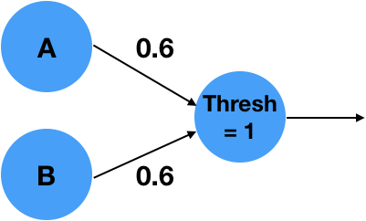
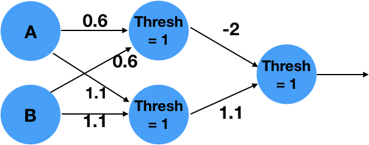
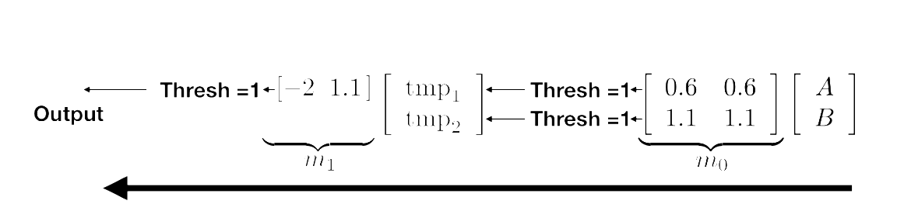
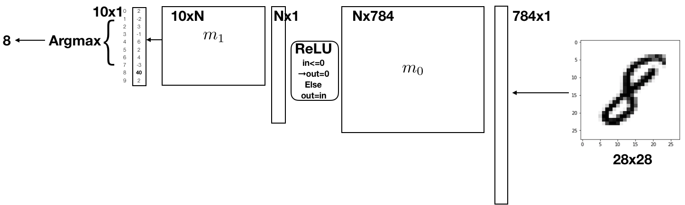
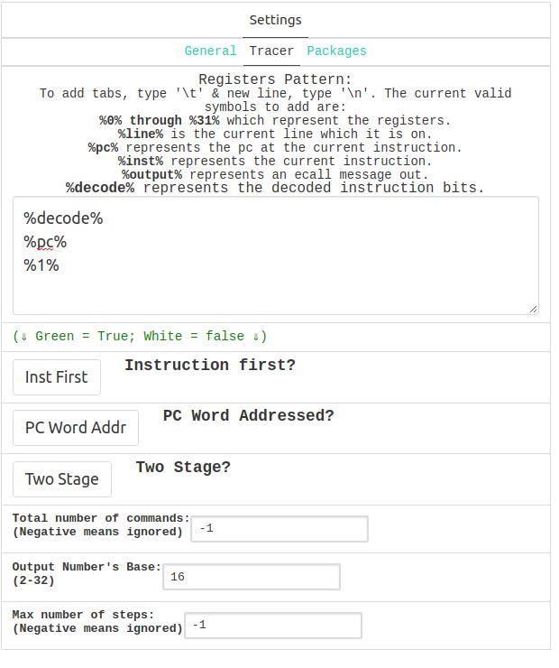

Project 2: CS61Classify
Overview
Part A Due Wednesday, July 8th Part B Due Sunday, July 12th
The purpose of this project is to have you implement a simple, yet extremely useful system in RISC-V assembly language. You will learn to use registers efficiently, write functions, use calling conventions for calling functions, as well as external ones, allocate memory on the stack and heap, work with pointers and more!
To make the project more interesting, you will implement functions which operate on matrices and vectors – for example, matrix multiplication. You will then use these functions to construct a simple Artificial Neural Net (ANN), which will be able to classify handwritten digits to their actual number! You will see that ANNs can be simply implemented using basic numerical operations, such as vector inner product, matrix multiplications, and thresholding.
Note: Although the spec is quite long, please make sure to read through the whole thing as it contains a lot of important information about the functions provided, running Venus, and testing your code.
Getting Started
Please follow the directions here to get a repository: https://forms.gle/vGVKXqvH9VLcQwnD8. To pull the starter code, first accept the GitHub Classroom assignment and clone the repo that’s been created for you. Then, from within that cloned repository, add the starter code repo as a remote repository in git and pull the starter code.
git clone YOUR_REPO_NAME
cd YOUR_REPO_NAME
git remote add starter https://github.com/61c-teach/su20-proj2-starter.git
git pull starter master
Your computer needs be able to run some Java and Python 3 scripts for this project. Most of your computers should be set up properly from 61A and 61B. If not, these CS61A and CS61B setup instructions should help. Feel free to skip the steps that aren’t relevant. You are also free to work on the hives.
Neural Networks
At a basic level, a neural networks tries to approximate a (non-linear) function that maps your input into a desired output. A basic neuron consists of a weighted linear combination of the input, followed by a non-linearity – for example, a threshold. Consider the following neuron, which implements the logical AND operation:

It is easy to see that for \(A=0\), \(B=0\), the linear combination \(0*0.6 + 0*0.6 = 0\), which is less than the threshold of 1 and will result in a 0 output. With an input \(A=0\), \(B=1\) or \(A=1\), \(B=0\) the linear combination will results in \(1*0.6 + 0*0.6 = 0.6\), which is less than 1 and result in a 0 output. Similarly, \(A=1\), \(B=1\) will result in \(1*0.6+1*0.6=1.2\), which is greater than the threshold and will result in a 1 output! What is interesting is that the simple neuron operation can also be described as an inner product between the vector \([A,B]^T\) and the weights vector \([0.6,0.6]^T\) followed by as thresholding, non-linear operation.
More complex functions can not be described by a simple neuron alone. We can extend the system into a network of neurons, in order to approximate the complex functions. For example, the following 2 layer network approximates the logical function XOR:

The above is a 2 layer network. The network takes 2 inputs, computes 2 intemediate values, and finally computes a single final output.
It can be written as matrix multiplications with matrices m_0 and m_1 with thresholding operations in between as shown below:

Convince yourself that this implements an XOR for the appropriate inputs!
You are probably wondering how the weights of the network were determined? This is beyond the scope of this project, and we would encourage you to take advanced classes in numerical linear algebra, signal processing, machine learning and optimization. We will only say that the weights can be trained by giving the network pairs of correct inputs and outputs and changing the weights such that the error between the outputs of the network and the correct outputs is minimized. Learning the weights is called: “Training”. Using the weights on inputs is called “Inference”. We will only perform inference, and you will be given weights that were pre-trained by your dedicated TA’s.
Handwritten Digit Classification
In this project we will implement a similar, but slightly more complex network which is able to classify handwritten digits. As inputs, we will use the MNIST data set, which is a dataset of 60,000 28x28 images containing handwritten digits ranging from 0-9. We will treat these images as “flattened” input vectors sized 784x1. In a similar way to the example before, we will perform matrix multiplications with pre-trained weight matrices m_0 and m_1. Instead of thresholding we will use two different non-linearities: The ReLU and ArgMax functions. Details will be provided below.

Running RISC-V in Venus
All the code you write will be in RISC-V, and will be run in Venus. There are two ways to run your code with Venus, either through the web interface or from the command line using a Java .jar file. We recommend that you do most of your development locally with the .jar file, and only use the web interface for debugging or making changes to one file at a time.
Method 1: Web Interface
The first option is to run Venus in your browser via a web interface, linked here. This web interface allows for easy debugging and editing of your code. It also has its own virtual filesystem, from which you can upload and download files. You can also switch between editing multiple files in the virtual filesystem and save the files you’re working on.
There are three tabs in the web interface:
- “Venus”, which gives you access to the Venus’ virtual terminal and filesystem
- “Editor”, which allow you to write and edit code
- “Simulator”, which allows you to run your code, and debug it by setting breakpoints, checking register values, and inspecting memory locations
We highly recommend that you enable ‘Save on Close’ (make it green in the Venus->Settings->General tab). This will allow venus to save the file system and editor on a refresh.
Virtual Terminal and Filesystem
The “Venus” tab allows you to access the terminal, as well as Venus’ own filesystem. To see full list of commands supported by Venus you can run help, but we’ve included some of the most important ones below.
save <FILENAME>: Saves the code currently in the editor to FILENAME, creating/overwriting it as needededit <FILENAME>: Copies the code in FILENAME into the editor. This will overwrite everything currently in the editor, so make sure to save as needed beforehand. Additionally, if you’ve used this command to open a file in the editor, you can then use Ctrl+S to quickly save your code back to the same file, instead of switching back to the terminal and using thesavecommand.upload: Opens up a window allowing you to pick files from your local machine to upload to Venusdownload <FILENAME>: Opens up a window allowing you to download FILENAME to your local machineunzip <ZIP_FILENAME>: Unzips a.zipfile into the current working directory.zip <ZIP_FILENAME> <FILENAME_1> <FILENAME_2> ...: Opens up a window allowing you to download a zip file calledZIP_FILE_NAME, which contains all the specified files and/or folders. Folders are added to the zip file recursively.xxd <FILENAME>: Creates a hexdump of the specified file (Very useful for correctness checking on the web interface).help: Gives you a list of commands which it will accepthelp <COMMAND>: This will give you a help message for the command.
When uploading files to the Venus web interface, you’ll want to zip ONLY your src, tests/inputs, and tests/assembly directories locally, use the upload in the Venus terminal to upload that zip file, and then unzip to retrieve all your project files.
Alternatively, you can upload individual files to work with. However, you’ll need to make sure the directory structure is the same as the starter repo, or be prepared to edit the relative paths given to you in the starter code for inputs and .import statements.
Note: We HIGHLY recommend that you regularly copy the changes you’ve made in the Venus web interface to your local machine to save them. If you accidentally close the browser window or run edit before running save, you could lose a large amount of progress if you do not enable ‘Save on Close’. This is one of the primary reasons we recommend running with the .jar file for most of your development, and only turning to Venus to debug one specific file at a time.
Note2: If you do use ‘Save on Close’ (which you all should), be aware that there is a limit to the size of its state which it can store (limited by your browsers localStorage). This is why we say you should only upload the specified directories.
Debugging in Venus
The “Simulator” tab allows you to view register/memory values, and set breakpoints for debugging. There are two ways to set breakpoints in the web interface. One way is to open up the simulator tab, assemble the code, and then click a line to set a breakpoint before running the program.
You can also use the ebreak command, which will set a break point at the following instruction. For example, in the following code, we’ve used ebreak to set a breakpoint on the line add t1 t0 1.
addi t0 x0 1
ebreak
add t1 t0 1 # Debugger will stop right before this instruction
add t2 t0 1
You can also use ebreaks alongside branch statements for conditional breakpoints. For example, let’s say you want to break only when t0 is equal to 0, and skip over the breakpoint otherwise. We could use ebreak in the following way to skip the breakpoint if t0 != 0.
bne t0 x0 skip_break
ebreak
skip_break:
addi x0 x0 0
addi t4 x0 3
If you want to disable an ebreak while you are running your code, you can set a breakpoint (click the line) on the line with the ebreak. This will disable the ebreak for the rest of the code run.
Venus Settings: Mutable Text and the Tracer
One more thing you should know about are the settings in the “Venus” tab. Here you can do things like disable mutable text to catch bugs with altering the code portion of memory, set command line arguments to your program, as well as various other options. By default memory accesses between the stack and heap are disabled, but mutable text is allowed.
You can also enable tracing your program in the “Tracer” subtab of the settings tab. The tracer allows you to basically print out specific values on every step of your program. You can denote the values to be printed out in the text box under “Register Pattern”, as well as their format in the options below.
For example, the following settings will enable you to print the instruction itself as well as the registers pc and x1 in hexadecimal (base 16) on every step of your program:

Then, in the “Simulator” tab, if you click “Trace” instead of “Run” you’ll get the following printed output:
auipc x8 65536
00000004
00000000
addi x8 x8 0
00000008
00000000
...
Method 2: .jar file
The alternative way to run Venus is by running it as a Java .jar file, which we’ve provided for you as part of the starter code as venus.jar. If you want to download the latest version yourself, you can find it here or in the “JVM” subtab under the “Venus” tab in the web interface.
The .jar file runs much faster than the web interface, and will be the difference between your code taking several minutes vs. several seconds when we get to larger inputs. The downside is that you lose access to the debugging UI the web interface provides.
The basic command to run a given RISC-V file is as follows:
java -jar venus.jar <FILENAME>
Note that if you’re getting an error about max instruction count being reached for large MNIST inputs, you can increase the instruction count with the -ms flag. Setting the max instruction count to a negative value will remove the limit altogether.
java -jar venus.jar -ms -1 <FILENAME>
There are also various other flags, and you can see a complete list by running:
java -jar venus.jar -h
Like with the web version, you can disable mutable text with the -it flag.
Overall, we recommend you debug your code on smaller inputs via the web interface, and switch to the .jar version when running on larger, MNIST inputs. Note that you can also debug in the .jar version by using print functions like print_int and print_int_array, which are provided for you in utils.s.
Using the Tracer with the .jar file
You can also actually enable the tracer mentioned previously when using the .jar file as well. This can be done using the command line flag -t, after which you can use -tf to read in the pattern to print from a text file or -tp to read the pattern from the command line. You can also use the -tb command to specify the base of the register output.
For example, the following command will print out the instruction as well as the registers pc and x1 in hexadecimal (base 16) for every step of your program, and is equivalent to how we ran the tracer in the web interface previously.
java -jar venus.jar <FILENAME> -t -tb 16 -tp "%decode%\n%pc%\n%x1%\n"
Testing Framework
In the tests/assembly subdirectory, you’ll find several RISC-V files to test your code with. There is a test file corresponding to every function you’ll have to write, except for the main function in the final part of the project.
Some of these test files have been provided for you in their entirety, and you’ll only have to edit them to change their inputs. Other ones just include starter code, and have been left for you to fill out.
We will not be grading you on the tests you write for your own code. However, the autograder for this project will only give you basic sanity checks, and is not meant to be comprehensive. Instead, it is up to you to test your own functions, using both provided and self-written tests.
The goal of this is to help you build confidence in your own code in the absence of an autograder by writing your own tests.
We have also included a bunch of pregenerated inputs (inputs) which you may find useful in test creation. In addition to that, we have specified an outputs directory which contains the expected file outputs of a few of the tests ran by the test runner.
Test Runner
We have also included a python file, the test runner.py in the tests directory. We created this to help make it easier to run and verify your tests! If you do not include any command line args to it, it will run all of the tests it finds in the test_cases folder in the same directory.
You can run it like this:
python3 runner.py
You may only want to run a test or two. You can do this by specifying the test id as an arg for the test runner. For example, if I wanted to run the dot and argmax test, I would run:
python3 runner.py argmax dot
The id for the tests we provide are the same as the .s filenames. However, if you create your own tests, please follow test creation convention otherwise your tests may not properly run.
NOTE: you must be in the tests directory for runner.py to work properly
Writing Tests with the Test Runner
You can add additional tests to the test runner! You just need to create a json file in the test_cases folder. There are plenty of examples of the format of a test in there. The test runner will automatically pull the tests from that folder. NOTE: The file must end in .json for the test runner to use it!
Here is info about the format of the json file:
You must have in the top level a dictionary containing a single test or a list of multiple tests (yes you can specify multiple tests in one file).
Withing a test dictionary, you must define a few options. Here are the options you can specify for a test:
Name: This is the name of the test for your identification.id: This is the id of the test which you can use to specify the run of a specific test.test_file: This is the main file you want the test to run. This file should contain a.globl mainfunction. The test runner looks to run a file in thetests/assemblyfolder so if you want to run a file from outside of that, you will have to add the correct relative indexing.args(OPTIONAL): Specify additional args you want to run with venus. Args should be in the form of a list where each string in the list is a single arg. We recommend you always add the args["-it", "-ms", "-1"]as this is what the autograder will always run. It is also useful for detecting bugs. You can add additional args like filepaths as well. Take a look attests/test_cases/test_main.jsonfor a better example.stdout(OPTIONAL): This specifies the expected output of standard out of venus. It’s default is an empty string meaning it expects no output from standard out. If you do not care what is outputted from stdout, you may specify null and the test runner will not use it to check for correctness.stderr(OPTIONAL): This specifies the expected output of standard error of venus. It’s default is an empty string meaning it expects no output from standard error. If you do not care what is outputted from stderr, you may specify null and the test runner will not use it to check for correctness.exitcode(OPTIONAL): This specifies the expected exitcode of venus. It’s default is 0 meaning no error occurred. If you do not care what the exitcode is, you may specify null and the test runner will not use it to check for correctness.cwd(OPTIONAL): This is the current working directory you would like to run venus.timeout(OPTIONAL): This is the amount of time a test is allowed to run for. It is specified in seconds.compare_files(OPTIONAL): This is a list of files which you want to compare. To specify a file, add to the compare_files list a dictionary with two keys:student,referenceeach which value is a string with the path to the files that should be compared. You may add as many files to compare as you would like. It accepts binary files as well.
RISC-V Calling Convention
We will be testing all of your code on RISC-V calling conventions, as described in lecture/lab/discussion. All functions that overwrite registers that are preserved by convention must have a prologue and epilogue where they save those register values to the stack at the start of the function and restore them at the end. The sanity tests for part A will not include any for calling convention but the rest of the test cases for both parts (including part B) will test for calling convention.
Following these calling conventions is extremely important for this project, as you’ll be writing functions that call your other functions, and maintaining the abstraction barrier provided by the conventions will make your life a lot easier.
We’ve provided # Prologue and # Epilogue comments in each function as a reminder. Note that depending on your implementation, some functions won’t end up needed a prologue and epilogue. In these cases, feel free to delete/ignore the comments we’ve provided.
For an closer look at RISC-V calling conventions, we’ve provided some excellent notes written by a former head TA for the course here.
NOTE: MOST of the autograder tests for both parts directly test calling convention. If you fail to follow it, you will lose a lot of points!
Common Errors
Ran for more than max allowed steps!: Venus will automatically terminate if your program runs for too many steps. This is expected for large MNIST sized inputs, and you can workaround it with the-msflag. If you’re getting this for small inputs, you might have an infinite loop.Attempting to access uninitialized memory between the stack and heap.: Your code is trying to read or write to a memory address between the stack and heap pointers, which is causing a segmentation fault. Check that you’re allocating enough memory, and that you’re accessing the correct addresses.The magic value for this malloc node is incorrect! This means you are overriding malloc metadata OR have specified the address of an incorrect malloc node!: Your code is modifying the metadata of a malloc node. This error can come from any of the alloc or free commands as venus implements a linked list form of malloc. The metadata is right below (lower address) the pointer to that location so if you write to the wrong location, you may corrupt that data. Venus has a method to detect some corruptions which is why you get this error. Check that you are correctly indexing any malloced data and that you are not writing out of bounds of what you allocated.
Part A: Mathematical Functions
Due Wednesday, July 8th
In this part, you will implement some of matrix operations used by neural networks. These include a dot product, matrix multiplication, an elementwise ReLU, and an argmax function.
NOTE: ONLY the sanity tests for part A will not test for calling convention.
Background Knowledge
Matrix Format
In this project, all two-dimensional matrices will be stored as a one-dimensional vector in row-major order. One way to think about it is that we can create a 1D vector from a 2D matrix by concatenating together all the rows in the matrix. Alternatively, we could concatenate all the columns together instead, which is known as column-major order.

For a more in-depth look at row-major vs. column-major order, see this Wikipedia page.
Vector/Array Strides
The stride of a vector is the number of memory locations between consecutive elements of our vector, measured in the size of our vector’s elements. If our stride is \(n\), then the memory addresses of our vector elements are \(n\) * sizeof(element) bytes apart.
So far, all the arrays/vectors we’ve worked with have had stride 1, meaning there is no gap betwen consecutive elements. Now, to do the row * column dot products with our row-major matrices that we’ll need for matrix multiplication, we will need to consider vectors with varying strides. Specifically, we’ll need to do this when considering a column vector in a flattened, row-major representation of a 2D matrix
Let’s take a look at a practical example. We have the vector int *a with 3 elements.
- If the stride is 1, then our vector elements are
*(a),*(a + 1), and*(a + 2), in other wordsa[0],a[1], anda[2]. - However, if our stride is 4, then our elements are at
*(a),*(a + 4), and*(a + 8)or in other wordsa[0],a[4], anda[8].
To summarize in C code, to access the ith element of a vector int *a with stride s, we use *(a + i * s), or a[i * s]. We leave it up to you to translate this memory access into RISC-V.
For a closer look at strides in vectors/arrays, see this Wikipedia page.
Task 1: ReLU
In relu.s, implement our relu function to apply the mathematical ReLU function on every element of the input array. This ReLU function is defined as \(\text{ReLU}(a) = max(a, 0)\), and applying it elementwise on our matrix is equivalent to setting every negative value equal to 0.
Additionally, notice that our relu function operates on a 1D vector, not a 2D matrix. We can do this because we’re applying the function individually on every element of the matrix, and our 2D matrix is stored in memory as a row-major 1D vector.
Testing: ReLU
We’ve provided test_relu.s for you to test your relu function. In it, you can set the values and dimensions of a matrix in static memory. Running the file will print that matrix before and after calling your relu function on it.
Task 2: ArgMax
Near the end of our neural net, we’ll be provided with scores for every possible classification. For MNIST, we’ll be given a vector of length 10 containing scores for every digit ranging from 0 to 9. The larger the score for a digit, the more confident we are that our handwritten input image contained that digit. Thus, to classify our handwritten image, we pick the digit with the highest score.
The score for the digit \(i\) is stored in the \(i\)-th element of the array, to pick the digit with the highest score we find the array index with the highest value. In argmax.s, implement the argmax function to return the index of the largest element in the array. If there are multiple largest elements, return the smallest index.
Additionally, note that just like relu, this function takes in a 1D vector and not a 2D matrix. The index you’re expected to return is the index of the largest element in this 1D vector.
Testing: Argmax
We’ve provided test_argmax.s for you to test your argmax function. You can edit it to set a static vector v0 along with its length, and then run the file to print the output returned by running your function, which should be the index of the largest element in v0.
Task 3.1: Dot Product
In dot.s, implement the dot function to compute the dot product of two integer vectors. The dot product of two vectors \(a\) and \(b\) is defined as
\(dot(a, b) = \sum_{i=0}^{n-1} a_ib_i = a_0 * b_0 + a_1 * b_1 + \cdots + a_{n-1} * b_{n-1}\),
where \(a_i\) is the \(i\)th element of \(a\).
Notice that this function takes in the a stride as a variable for each of the two vectors, make sure you’re considering this when calculating your memory addresses. We’ve described strides in more detail in the background section above, which also contains a detailed example on how stride affects memory addresses for vector elements.
Also note that we do not expect you to handle overflow when multiplying. This means you won’t need to use the mulh instruction.
For a closer look at dot products, see this Wikipedia page.
Testing: Dot Product
This time, you’ll need to fill out test_dot.s, using the starter code and comments we’ve provided. Overall, this test should call your dot product on two vectors in static memory, and print the result. Feel free to look at test_argmax.s and test_relu.s for reference. While the test functions themselves won’t be graded, we are only providing a basic sanity test on the autograder and the other tests will be hidden to you until after grades are published so testing your code is crucial.
By default, in the starter code we’ve provided, v0 and v1 point to the start of an array of the integers 1 to 9, continuous in memory. Let’s assume we set the length and stride of both vectors to 9 and 1 respectively. We should get the following:
v0 = [1, 2, 3, 4, 5, 6, 7, 8, 9]
v1 = [1, 2, 3, 4, 5, 6, 7, 8, 9]
dot(v0, v1) = 1 * 1 + 2 * 2 + ... + 9 * 9 = 285
What if we changed the length to 3 and the stride of the second vector v1 to 2, without changing the values in static memory? Now, the vectors contain the following:
v0 = [1, 2, 3]
v1 = [1, 3, 5]
dot(v0, v1) = 1 * 1 + 2 * 3 + 3 * 5 = 22
Note that v1 now has stride 2, so we skip over elements in memory when calculating the dot product. However, the pointer v1 still points to the same place as before: the start of the sequence of integers 1 to 9 in memory.
Task 3.2: Matrix Multiplication
Now that we have a dot product function that can take in varying strides, we can use it to do matrix multiplication. In matmul.s, implement the matmul function to compute the matrix multiplication of two matrices.
The matrix multiplication of two matrices \(A\) and \(B\) results in the output matrix \(C = AB\), where \(C[i][j]\) is equal to the dot product of the \(i\)-th row of \(A\) and the \(j\)-ith column of \(B\). Note that if we let the dimensions of \(A\) be \((n * m)\), and the dimensions of \(B\) be \((m * k)\), then the dimensions of \(C\) must be \((n * k)\). Additionally, unlike integer multiplication, matrix multiplication is not commutative, \(AB\) != \(BA\).
Documentation on the function has been provided in the comments. A pointer to the output matrix is passed in as an argument, so you don’t need to allocate any memory for it in this function. Additionally, note that m0 is the left matrix, and m1 is the right matrix.
Note that since we’re taking the dot product of the rows of m0 with the columns of m1, the length of the two must be the same. If this is not the case, you should exit the program with exit code 4.
A critical part of this function, apart from having a correctly implemented dot product, is passing in the correct row and column vectors to the dot product function, along with their corresponding strides. Since our matrices are in row-major order, all the elements of any single row are contiguous to each other in memory, and have stride 1. However, this will not be the case for columns. You will need to figure out the starting element and stride of each column in the right matrix.
For a closer look at matrix multiplication, see this Wikipedia page.
Testing: Matrix Multiplication
Fill out the starter code in test_matmul.s to test your matrix multiplication function. The completed test file should let you set the values and dimensions for two matrices in .data as 1D vectors in row-major order. When ran, it should print the result of your matrix multiplication.
Note that you’ll need to allocate space for an output matrix as well. The starter code does this by creating a third matrix in static memory.
For testing complicated inputs, you can use any available tool to help you calculate the expected output (numpy, wolfram, online matrix calculator).
m0 = [1, 2, 3
4, 5, 6,
7, 8, 9]
m1 = [1, 2, 3
4, 5, 6,
7, 8, 9]
matmul(m0, m1) =
[30, 36, 42
66, 81, 96
102, 126, 150]
Part B: File Operations and Main
Due Sunday, July 12th
In this part, you will implement functions to read matrices from and write matrices to binary files. Then, you’ll write a main function putting together all of the functions you’ve written so far into an MNIST classifier, and run it using pretrained weight matrices that we’ve provided.
Background Knowledge
Matrix File Format
Our matrix files come in two forms: binary and plaintext. We’ve included a python script called convert.py in the tools folder to convert between the two. The usage is as follows:
python convert.py file.bin file.txt --to-asciito go from binary to plaintextpython convert.py file.txt file.bin --to-binaryto go from plaintext to binary
NOTE: to call convert.py from the home directory, you must replace all convert.py instances with tools/convert.py otherwise your code will not run.
Plaintext Format
The first line of the plaintext file will contain two integers, representing number of rows and columns of the matrix. Every line afterwards is a row of the matrix. For example, a plaintext file containing a 3x3 matrix would look like this:
3 3
1 2 3
4 5 6
7 8 9
Note that there is a newline after the final row of the matrix.
Binary Format
The first 8 bytes of the binary file represent two 4 byte integers. These integers are the number of rows and columns of the matrix. Every 4 following bytes represents an integer that is an element of the matrix, in row-major order. There are no gaps between elements.
Viewing Binary Files
If you simply open up a binary file with vim or any text editor, it would attempt to interpret the individual bytes as characters. This will result in an incomprehensible output.
There are a variety of ways to view binary files, but we recommend the xxd command. You can find its man page here, but its default functionality is to output the raw bits of the file in a hex representation.
Note that you can also use hexdump, but the ordering/endianness of bytes will be different (please do not present this to a TA to debug in OHs or project parties; if you want to use hexdump by yourself, run xxd first before asking). The following examples all assume you’re using xxd. (Remember that the primitive version of this command xxd <FILENAME> also works on Venus’s web interface terminal!)
For example, let’s say the plaintext example in the previous section is stored in file.txt in the main directory. We can run python convert.py file.txt file.bin --to-binary to convert it to a binary format, then xxd file.bin, which should print the following:
00000000: 0300 0000 0300 0000 0100 0000 0200 0000 ................
00000010: 0300 0000 0400 0000 0500 0000 0600 0000 ................
00000020: 0700 0000 0800 0000 0900 0000 ............
If you interpret this output 4 bytes at a time (equivalent to 8 hex digits) in little-endian order (see below), you’ll see that they correspond to the values in the plaintext file. Don’t forget that the first and second 4 bytes are integers representing the dimensions, and the rest are integer elements of the matrix.
Endianness
It is important to note that the bytes are in little-endian order. This means the least significant byte is placed at the lowest memory address. For files, the start of the file is considered the “lower address”. This relates to how we read files into memory, and the fact that the start/first element of an array is usually at the lowest memory address.
RISC-V uses little-endian by default, and our files are all little-endian as well. This means you should never have to worry about endianness when writing code. Rather, it’s something you’ll need to keep in mind when debugging/viewing the bits.
Ecalls and Utils.s
The ecall instruction is a special command in RISC-V, and corresponds to a environment/system call. For this project, we’ve created helper functions in utils.s that wrap around the various different ecalls for you to use. Do not make ecalls directly in your own code. Use these helper functions instead.
ecalls are expensive and should be minimally used for efficiency!
All of these functions are documented in inline comments in utils.s, alongside their arguments and return values. The most important of these are highlighted below.
print_int,print_str, andprint_charfor printing valuesfopen,fread,fwrite, andfclosefor reading/writing to filesexitto quit the program with a zero exit code (no error)exit2to quit the program with the integer ina1as the exit codemalloc, which allocatesa0bytes on the heap, and returns a pointer to them ina0.free, which frees heap memory specified by the pointer ina0num_alloc_blocks, which returns the number of allocated malloc blocks toa0.print_num_alloc_blocks, which prints out the number of allocated malloc blocks.print_int_array, which prints out all elements of an integer array
File Operations
In the section above, we described the helper functions fopen, fread, fwrite, and fclose. Because these functions are critical for the read_matrix and write_matrix functions you’ll need to write, we’re going to explore them in depth here.
fopen
Opens a file that we can then read and/or write to, depending on the permission bit. Returns a file descriptor, which is a unique integer tied to the file. Must be called on a file before any other operations can be done on it.
- Arguments:
a1is a pointer to a string containing the filename of the file to opena2is an integer denoting the permissions we open the file with. For example, we can open the file with read permissions, which prevents us from writing to it. For this project, we only really care about a few basic permission bits:0, which corresponds torfor read only permission, and1which corresponds towfor write only permission. Note thatwwill overwrite the file if it already exists, and create it if it doesn’t.
- Return Values
a0is a file descriptor, which is a unique integer tied to the file. We will call future file-related functions on this file descriptor, so we know which opened file we’re reading/writing/closing. On failure,a0is set to-1.
fread
Reads a given number of bytes from a file into a buffer, which is a preallocated chunk of memory to store the bytes. Note that repeated reads will read consecutive bytes from the file. For example, two freads of 8 bytes on a file will read the first 8 bytes and then the second 8 bytes. It will not read the same 8 bytes twice.
- Arguments:
a1is the file descriptor of the file we want to read from, previously returned byfopen.a2is a pointer to the buffer that we’re going to read the bytes from the file into. This must be an appropriate amount of memory that was allocated before calling the function, and passed in as a pointer.a3is the number of bytes to read from the file.
- Return Values
a0is the number of bytes actually read from the file. If the number of bytes actually read differs from the number of bytes specified in the input then then we either hit the end of the file or there was an error.
fwrite
Writes a given number of elements of a given size. Like fread, subsequent writes to the same file do not overlap, but are rather appended to each other. Note that unlike fread, we don’t pass in the total number of bytes but rather the total number of elements and the size of each element in bytes. We can multiply the two to find the total number of bytes written.
Additionally, note that our writes aren’t actually saved until we run fclose or fflush.
- Arguments:
a1is the file descriptor of the file we want to write to, previously returned byfopen.a2is a pointer to a buffer containing what we want to write to the file.a3is the number of elements to write out of the buffera4is the size of each buffer element in bytes
- Return Values
a0is the number of elements actually written to the file. Ifa0 != a3, then we either hit the end of the file or there was an error.
fclose
Closes the file once we’re done with it, saving any writes we’ve made to it.
- Arguments:
a1is the file descriptor of the file we want to close to, previously returned byfopen.
- Return Values
a0is 0 on success, and -1 otherwise.
Task 1: Read Matrix
In read_matrix.s, implement the read_matrix function which uses the file operations we described above to read a binary matrix file into memory. If any file operation fails or doesn’t return the expected number of bytes, you must exit the program with specify exit codes.
For Read Matrix, here are the following codes you should exit with:
- If you receive a
mallocerror, exit with code 48 - If you receive an
fopenerror or eof, exit with code 50. - If you receive an
freaderror or eof, exit with code 51. - If you receive an
fcloseerror or eof, exit with code 52.
Note: It is useful to specify unique exit codes to help you debug errors!
Recall that the first 8 bytes contains the two 4 byte dimensions of the matrix, which will tell you how many bytes to read from the rest of the file. Additionally, recall that the binary matrix file is already in row-major order.
You’ll need to allocate memory for the matrix in this function as well. This will require calls to malloc , which is in util.s and also described in the background section above.
Finally, note that RISC-V only allows for a0 and a1 to be return registers, and our function needs to return three values: The pointer to the matrix in memory, the number of rows, and the number of columns. We get around this by having two int pointers passed in as arguments. We set these integers to the number of rows and columns, and return just the pointer to the matrix.
Testing: Read Matrix
Testing this function is a bit different from testing the others, as the input will need to be a properly formatted binary file that we can read in.
We’ve provided a skeleton for test_read_matrix.s, which will read the file test_input.bin under inputs/test_read_matrix, and then print the output. The file test_input.bin is the binary format of the plaintext matrix file test_input.txt. To change the input file read by the test you’ll need to edit test_input.txt first, then run the convert.py script with the --to-binary flag to update the binary.
From the root directory, it should look something like this:
python tools/convert.py --to-binary tests/inputs/test_read_matrix/test_input.txt tests/inputs/test_read_matrix/test_input.bin
After this, you can run the test again, and it’ll read your updated test_input.bin.
Another thing to note is that you’ll need to allocate space for two integers, and pass in those memory addresses as arguments to read_matrix. You can do this either with malloc or by allocating space on the stack.
Task 2: Write Matrix
In write_matrix.s, implement the write_matrix function which uses the file operations we described above to write from memory to a binary matrix file. The file must follow the format described in the background section above. Like with read_matrix, iff any file operation fails or doesn’t return the expected number of bytes, you must exit the program with specify exit codes.
For Read Matrix, here are the following codes you should exit with:
- If you receive an
fopenerror or eof, exit with code 53. - If you receive an
fwriteerror or eof, exit with code 54. - If you receive an
fcloseerror or eof, exit with code 55.
Note: It is useful to specify unique exit codes to help you debug errors!
Testing: Write Matrix
For this function, instead of checking a printed output, you’ll need to check the file that was written. We’ve provided a skeleton for test_write_matrix.s, which should call your function to write a matrix stored in static .data to test_output.bin.
You can change what gets written by editing test_write_matrix.s, but to check that the output is correct you’ll need to interpret a binary format matrix file. This can be done either by converting it to plaintext with:
python tools/convert.py --to-ascii tests/outputs/test_write_matrix/<filename>.bin tests/outputs/test_write_matrix/<filename>.txt,
or by manually inspecting the bits themselves with:
xxd tests/outputs/test_write_matrix/<filename>.bin.
Note, the default file test_write_matrix.s will write to is student_write_outputs.bin.
Task 3: Putting it all Together
In classify.s, implement the classify function. This will bring together everything you’ve written so far, and create a basic sequence of functions that will allow you to classifiy the preprocessed MNIST inputs using the pretrained matrices we’ve provided. You may need to malloc space when reading in matrices and computing the layers of the network, but remember to always free all data allocated at the end of this process. More information about the free function is available in utils.s and the background section above. The classify function will be wrapped by the main.s file meaning you still must follow calling convention! The main.s file, in what we gave you, is a dummy main which will directly call your classify function (and pass in the command line arguments) though it could always do more than that!
Command Line Arguments and File Paths
The filepaths for the input, m0, m1, and the output to write to will all be passed in on the command line. RISC-V handles command line arguments in the same way as C, at the start of the main function a0 and a1 will be set to argc and argv respectively. In addition, we have added an arg a2 which will tell you if you should print out the classification if it is zero. If this is not set to 0, you MUST not print out anything or you will fail tests! This arg can be useful if you want to run multiple classifications in the same script.
We will call main.s in the following way from the root directory:
java -jar tools/venus.jar src/main.s <venus flags> <M0_PATH> <M1_PATH> <INPUT_PATH> <OUTPUT_PATH>
If you’re testing from any other directory, make sure your path to main.s and filepaths correspond to your CWD (current working directory).
Note that the pointer for to the string M0_PATH will be located at index 1 of argv, M1_PATH at index 2, and so on. venus flags are not considered in total number of command line arguments.
If the number of command line arguments is different from what is expected, you code should exit with exit code 49. This will require a call to a helper function in utils.s. Take a look at the starter code for matmul, read_matrix, and write_matrix for hints on how to do this.
Note: While classify is its own function, we are acting as if it is the main function. Making it a function other than main is useful as we can now chain classifications and perform more complex procedures as we can get the result of a classification programmatically and perform other operations based off of the result!
The Network
The first thing you’ll need to do (after verifying the number of command line arguments) is load m0, m1, and the input matrices into memory by making multiple calls to read_matrix, using command line arguments. Remember you need to pass in two integer pointers as arguments.
Next, you’ll want to use those three matrices to calculate the scores for our input. Our network consists of a matrix multiplication with m0, followed by a relu on the result, and then a second matrix multiplication with m1. At the end of this, we will have a matrix of scores for each classification. We then pick the index with the highest score, and that index is the classification for our input.
Given two weight matrices m0 and m1, along with an input matrix input, the pseudocode to generate the scores for each class is as follows:
hidden_layer = matmul(m0, input)
relu(hidden_layer) # Recall that relu is performed in-place
scores = matmul(m1, hidden_layer)
Once you’ve obtained the scores, we expect you to save them to the output file passed in on the command line. Then, call argmax, which will return a single integer representing the classification for your input, and print it.
Note that when calling argmax and relu, you should treat your inputs as 1D arrays. That means the length you pass into the function should be the number of elements in your entire matrix.
Testing classify
All test inputs are contained in inputs. Inside, you’ll find a folder containing inputs for the mnist network, as well three other folders containing smaller networks.
Each network folder contains a bin and txt subfolder. The bin subfolder contains the binary files that you’ll run main.s on, while the txt subfolder contains the plaintext versions for debugging and calculating the expected output.
Within the bin and txt subfolders, you’ll find files for m0 and m1 which define the network, and a folder containing several inputs.
For MNIST, there are two additional folders:
txt/labels/contains the true labels for each input, which are the actual digits that each corresponding input image contains.student_inputs/contains a script to help you run your own input images, as well as an example.
Simple
Apart from MNIST, we’ve provided several smaller input networks for you to run your main function on. simple0, simple1, and simple2 are all smaller inputs that will be easier to debug.
To test on the first input in simple0 for example, run the following:
java -jar tools/venus.jar src/main.s -ms -1 tests/inputs/simple0/bin/m0.bin tests/inputs/simple0/bin/m1.bin tests/inputs/simple0/bin/inputs/input0.bin tests/outputs/test_basic_main/student_basic_output.bin
You can then convert the written file to plaintext, check that it’s values are correct, and that the printed integer is indeed the index of the largest element in the output file.
python tools/convert.py --to-ascii output.bin output.txt
For verifying that the output file itself is correct, you can run the inputs through a matrix multiplication calculator like this one, which allows you to click “insert” and copy/paste directly from your plaintext matrix file. Make sure you manually set values to zero for the ReLU step.
Note that these files cover a variety of dimensions. For example the simple2 inputs have more than one column in them, meaning that your “scores” matrix will also have more than one column. Your code should still work as expected in this case, writing the matrix of “scores” to a file, and printing a single integer that is the row-major index of the largest element of that matrix.
MNIST
All the files for testing the mnist network are contained in inputs/mnist. There are both binary and plaintext versions of m0, m1, and 9 input files.
To test on the first input file for example, run the following:
java -jar venus.jar src/main.s -ms -1 tests/inputs/mnist/bin/m0.bin tests/inputs/mnist/bin/m1.bin tests/inputs/mnist/bin/inputs/mnist_input0.bin tests/outputs/test_mnist_main/student_mnist_outputs.bin
(Note that we run with the -ms -1 flag, as MNIST inputs are large and we need to increase the max instructions Venus will run)
This should write a binary matrix file output.bin which contains your scores for each digit, and print out the digit with the highest score. You can compare the printed digit versus the one in tests/inputs/mnist/txt/labels/label0.txt.
You can check the printed digit printed by main against the plaintext labels for each of the input files in the mnist/txt/labels folder.
We’ve also included a script tests/inputs/mnist/txt/print_mnist.py, which will allow you to view the actual image for every mnist input. For example, you can run the following command from the directory tests/inputs/mnist/txt to print the actual image for mnist_input8 as ASCII art alongside the true label. If you run the command from your root directory, include the full path.
python print_mnist.py 8
Not all inputs will classify properly. A neural network will practically never have 100% accuracy in its predictions. In our test cases specifically, mnist_input2 and mnist_input7 will be misclassified to 9 and 8 respectively. All other test cases should classify correctly.
Generating Your Own MNIST Inputs
Just for fun, you can also draw your own handwritten digits and pass them to the neural net. First, open up any basic drawing program like Microsoft Paint. Next, resize the image to 28x28 pixels, draw your digit, and save it as a .bmp file in the directory tests/inputs/mnist/student_inputs/.
Inside that directory, we’ve provided bmp_to_bin.py to turn this .bmp file into a .bin file for the neural net, as well as an example.bmp file. To convert it, run the following from inside the tests/inputs/mnist/student_inputs directory:
python bmp_to_bin.py example
This will read in the example.bmp file, and create an example.bin file. We can then input it into our neural net, alongside the provided m0 and m1 matrices.
java -jar venus.jar src/main.s -ms -1 -it tests/inputs/mnist/bin/m0.bin tests/inputs/mnist/bin/m1.bin tests/inputs/mnist/student_inputs/example.bin tests/outputs/test_mnist_main/student_input_mnist_output.bin
You can convert and run your own .bmp files in the same way. You should be able to achieve a reasonable accuracy with your own input images.
Submission
Gradescope
Submission for this project will be the same as it was for project 1. We will have Gradescope assignments for both Part A and Part B, and you will submit your repository to both.
Note that you shouldn’t add any .import statements to the starter code. For example, whatever’s importing matmul.s will also import dot.s and utils.s, so your matmul.s file itself shouldn’t need .import statements.
Grading
For Part A, the autograder will only run a basic sanity test on each of your functions by substituting them one at a time into the staff solution and running the entire neural net on a few chosen inputs. It then checks the scores written by the neural net, as well as the printed return value of argmax. If any of these are invalid, then you will fail the test for that specific function. The majority of tests will be hidden until after the project is published, as a result, you will need to make sure that you are testing your code.
For Part B, the autograder will also run the sanity tests on read_matrix and write_matrix in the same way as in Part A by substituting your code into the staff solution. However, for classify it will run your code entirely from end to end, and check the output. We will replace all other files but classify with staff solutions so you should not have castcading errors.
Remember from the testing framework section that these sanity tests are not comprehensive, and you should rely on your own tests to decide whether your code is correct. Your score will be determined mostly by hidden tests that will be ran after the submission deadline has passed.
We will also be limiting the number of submissions you can make to the autograder. Each submission will cost one token. You’ll be given 6 tokens, and each one will independently regenerate in 2 hours. Another way to phrase this is that for any given 2 hour period, you’re limited to 6 submissions.
Overall, there aren’t that many edge cases for this project. We’re mainly testing for correctness, RISC-V calling convention, and exiting with the correct code in the functions where you’ve been instructed to.